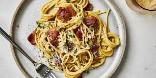

Carbonara

Description
bacon carbonara is a super rich, classic
"bacon and egg" spaghetti dish that's great
to serve for company. This recipe also makes
an unusual brunch offering.
- 1 pound spaghetti
- 2 tablespoons olive oil
- 8 slices bacon
- 1 onion
- 1 clove garlic
- 4 large eggs
- Parmesan cheese
- Fresh parsley
- Step Bring a large pot
of lightly salted water to a boil. Cook
spaghetti in boiling water, stirring
occasionally, until tender yet firm to
the bite, about 12 minutes. Drain, toss
spaghetti with 1 tablespoon olive oil,
and set aside.
- Step Place diced bacon
in a large skillet over medium heat; cook and
stir until evenly browned, about 10 minutes. Drain
bacon on paper towels, reserving 2 tablespoons
bacon fat in the skillet.
- Step Add 1 tablespoon olive oil
to bacon fat in the skillet. Add chopped
onion and cook over medium heat until onion
is translucent. Add minced garlic and cook
until fragrant, about 1 minute. Add wine and
cook 1 minute more.
- Step Return cooked bacon to the skillet;
add cooked spaghetti. Toss to coat and heat through,
adding more olive oil if it seems dry or sticks
together. Add beaten eggs and cook, tossing
constantly with tongs or a large fork, until
eggs are barely set. Quickly add 1/2 cup Parmesan
cheese and toss again. Season with salt and pepper
(remember that bacon and Parmesan are very salty).
- Step Serve warm with
chopped parsley sprinkled on top and extra
Parmesan cheese at the table.